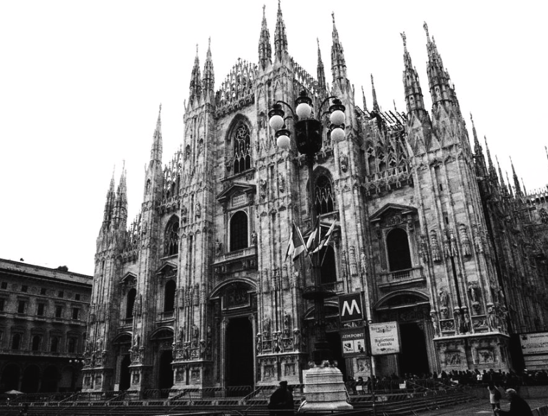

Shapes that speak
Great architecture uses curves, arches, vaults, and careful proportions to make every room feel intentional. It is not only about height or width; it is about how the eye travels and how the body experiences a place.
Not just monuments and facades, but the quiet discipline of form, context, light, and memory. This page celebrates why architecture is design, study and emotional craft — not only white boxes.

Architecture studies how people move, how walls breathe, and how materials age. It is a craft of geometry and empathy: a slow, thoughtful process that turns abstract ideas into spaces that feel alive.
Great architecture uses curves, arches, vaults, and careful proportions to make every room feel intentional. It is not only about height or width; it is about how the eye travels and how the body experiences a place.
Architects study climate, culture, history, craft and structure. They learn from the past and invent for the future. The best buildings are rooted in research, not in trends alone.
Today many projects fall back on flat glass, severe black-and-white minimalism, and sterile geometry. When architecture becomes a palette of only two colors, it can lose the soul, warmth, and richness that make spaces humane.

Stone, timber, brick and copper carry history. They show craftsmanship and the human scale of architecture at its best.

Natural light is one of architecture’s oldest tools. It reveals texture, animates surfaces, and creates atmosphere.